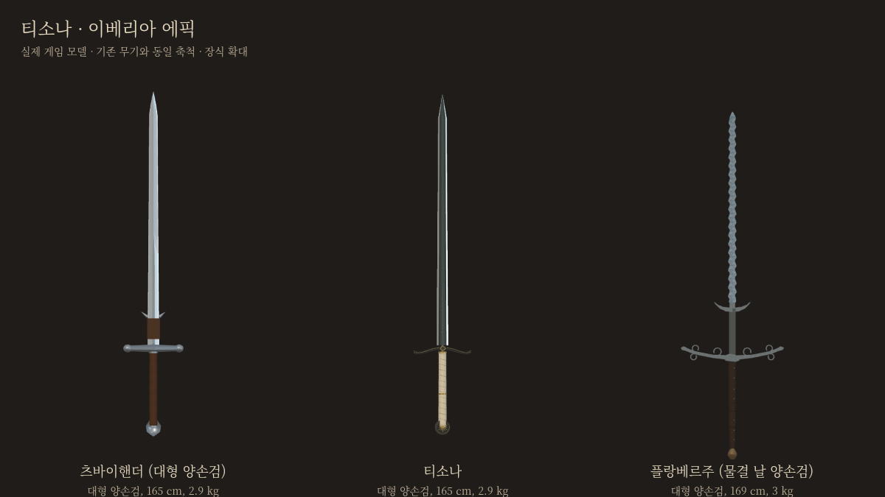
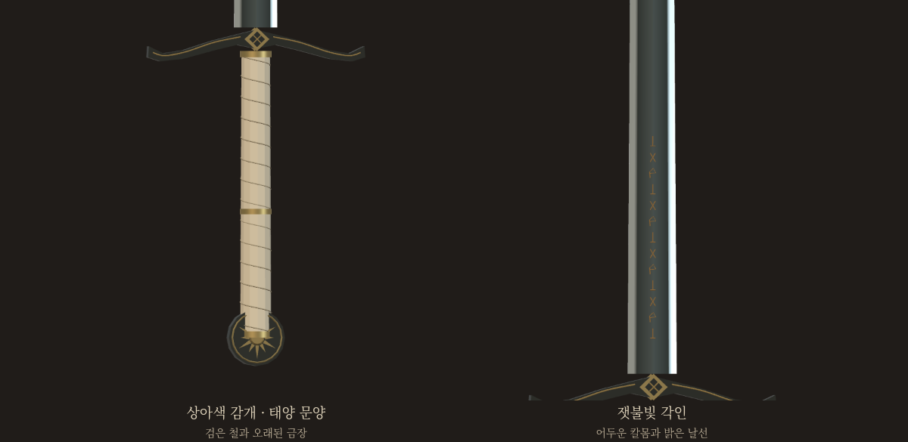

티소나 · 이베리아 에픽
검은 철, 상아색 감개, 잿불빛 각인을 실제 게임 무기로 제작했습니다.

티소나로 대련츠바이핸더와 비교나뭇가지를 든 브론과 대련합니다. 이베리아 기술이 모두 열리며 여정 진행은 저장하지 않습니다. 티소나의 별도 특수효과는 아직 선택 전입니다.

현재 규격
| 등급 · 유파 | 에픽 · 이베리아 |
|---|
| 종류 | 대형 양손검 |
|---|
| 길이 | 전체 약165cm · 칼날121.5cm |
|---|
| 무게 | 2.90kg |
|---|
| 자루 · 양손 간격 | 감개 구간36.5cm · 손 사이24cm |
|---|
| 특수효과 | 아래 후보 검토 중 · 현재는 에픽 공통 계수 |
|---|
전승의 검을 이베리아 양손 동작에 맞춰 각색한 게임 규격입니다. 츠바이핸더와 같은 물리 규격을 사용하며, 실물 티소나의 치수를 복원한 것은 아닙니다.
엘 시드가 적장을 꺾고 얻었다는 명검.
상아색 감개와 잿불빛 각인에 옛 명예가 남아 있다.
특수효과 후보
아래 효과는 제안이며 현재 대련에는 적용되지 않습니다. 수치는 첫 시험값입니다.
위세
추천 | 내 공격을 상대가 막아받으면 상대 기력8 추가 소모.
같은 공격1회 · 최소1.5초 간격. |
|---|
| 명예 회복 | 피격 후2초 안에 반격으로 피해를 주면 내 기력12 회복.
최소4초 간격 · 상처를 회복하는 효과는 아닙니다. |
|---|
| 정면 승부 | 쳐내기 성공 후1.5초 안의 첫 일반 공격 기력 비용50% 감소.
최소3초 간격 · 빗나가도 혜택은 소모됩니다. |
|---|
처음 세 후보의 원화 비교
halfsword-codex 포크의 별도 검토판 · 플랑베르주와 북부 대공의 검은 기존 등급을 유지합니다.